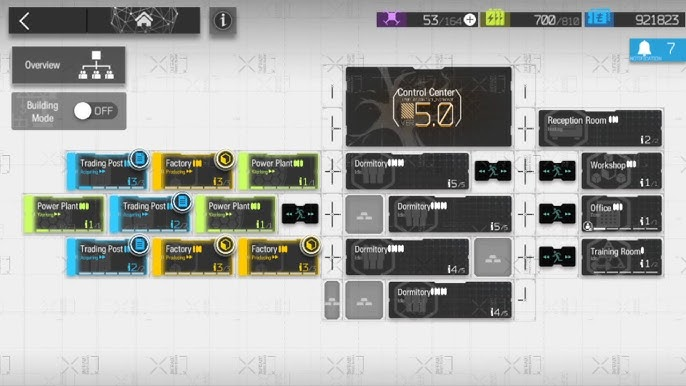
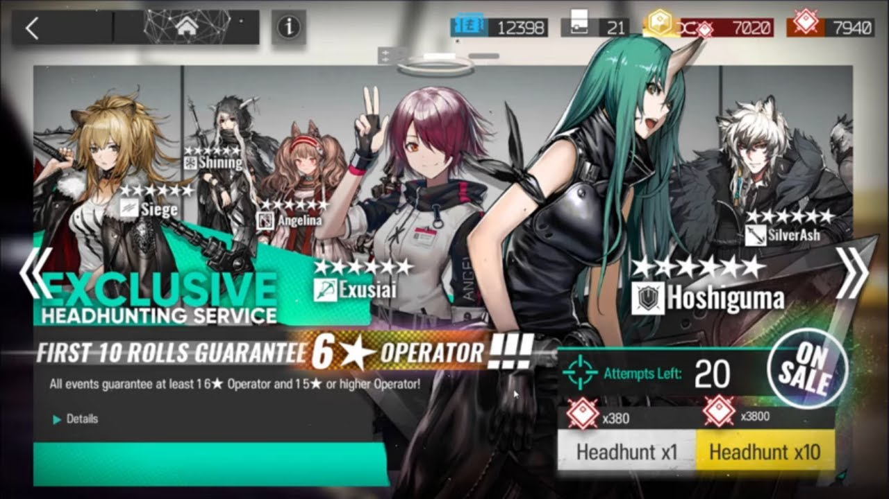

Caster
Atacan a los enemigos con magia, a menudo con ataques de área de efecto. Sus habilidades suelen infligir daño mágico que pueden provocar debilitaciones en el enemigo
Asumes el rol de un miembro clave de Rhodes Island, una compañía farmacéutica que lucha contra una infección mortal conocida como Oripathy. Esta enfermedad no solo amenaza la vida de las personas, sino que también ha generado una gran inestabilidad social y política
Junto a la líder de Rhodes Island, Amiya, deberás reclutar operadores, entrenarlos y desplegarlos en diversas operaciones para proteger a los inocentes y buscar una cura para la Oripathy.
Atacan a los enemigos con magia, a menudo con ataques de área de efecto. Sus habilidades suelen infligir daño mágico que pueden provocar debilitaciones en el enemigo
Son unidades defensivas que se especializan en bloquear múltiples enemigos y aguantar mucho daño. Sus habilidades a menudo se centran en aumentar su defensa o en infligir daño a los enemigos que los atacan.
Son los luchadores cuerpo a cuerpo más comunes. Tienen un buen equilibrio entre ataque y defensa. Sus habilidades pueden variar desde aumentar su ataque hasta aplicar efectos de estado a los enemigos.
Curan a los aliados y los mantienen con vida en el campo de batalla. Sus habilidades se centran en restaurar la salud de los aliados y en proporcionarles otros beneficios.
Atacan a los enemigos a distancia, a menudo desde una posición elevada. Sus habilidades suelen infligir daño fisico, ademas pueden incluir ataques de largo alcance, disparos perforantes o ataques a múltiples objetivos.
Tienen habilidades únicas y versátiles que pueden cambiar el rumbo de una batalla. Sus habilidades pueden incluir todo tipo de efectos, desde la creación de terrenos especiales hasta la manipulación del tiempo.
Proporcionan apoyo a todo el equipo, mejorando sus estadísticas u otorgándoles habilidades especiales. Sus habilidades suelen ser pasivas y benefician a todos los operadores en el campo de batalla.
Son los primeros operadores que despliegas en el campo de batalla. Tienen un bajo costo de despliegue y pueden bloquear hasta dos enemigos. Suelen tener habilidades relacionadas con generar recursos o ralentizar enemigos.
Los enfrentamientos se desarrollan en mapas de cuadrícula, donde debes desplegar a tus operadores (personajes) en puntos estratégicos para detener el avance de los enemigos.
Coloca a tus operadores en la cuadrícula para bloquear el avance de los enemigos y utilizar sus habilidades para derrotarlos.
La base es un área personalizable donde puedes construir y organizar diferentes instalaciones.
Aumentan el nivel de confianza de los operadores asignados, lo que mejora sus estadísticas de base (ataque, defensa, etc.).
Aumentan la eficiencia de los operadores cuando están asignados a tareas específicas, como investigación o producción.
Produce los materiales necesarios para construir nuevas instalaciones, mejorar las existentes y crear objetos.
Investigación de nuevas tecnologías. Gestión de tus operadores (asignamiento a tareas, cambio de equipo, etc.). Consulta de información sobre tus operadores, instalaciones y recursos.
Permite entrenar a tus operadores para mejorar sus habilidades y estadísticas.
Te permite contratar nuevos operadores.
Te permite intercambiar recursos como LMD, Fragmentos de Originio y otros materiales por objetos específicos.
La Planta de Energía es una instalación esencial, ya que utiliza reactores de Originium para proporcionar energía a la base.
Los eventos son episodios especiales que se añaden a la trama principal.
Estos episodios pueden presentar nuevas historias, desafíos, personajes y mecánicas de juego.
Personajes jugables con habilidades únicas que solo puedes obtener durante la duración del evento.
Nuevos escenarios para explorar y misiones desafiantes para completar.
Recompensas exclusivas como decoraciones para la base, materiales de mejora y orígenium.
Nuevas historias que amplían el universo de Arknights y te permiten conocer mejor a los personajes.

En el universo de Arknights, el headhunting es el sistema de reclutamiento de nuevos Operadores. Estos Operadores son personajes clave que utilizarás para completar misiones y defender tu base. Cada uno posee habilidades únicas y atributos especiales que los hacen valiosos en diferentes situaciones.
